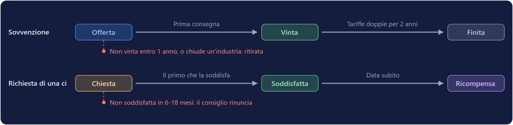

Sovvenzioni e richieste
Offerte per chiunque: tariffe doppie e quello che chiedono i consigli.
Di tanto in tanto l'ente regionale offre una sovvenzione e i consigli comunali chiedono qualcosa. Obiettivi le elenca sotto Opportunità, e le notizie avvisano quando una viene offerta, vinta o finisce.
Sovvenzioni
- Una sovvenzione indica un carico, da dove parte e dove va. Parte da un'industria che nessuno serve da 90 giorni o, per i rifiuti, da una città di 400 abitanti o più. Va a un'industria che lo accetta o, per merci, alimenti o giornali, a una città di 400 abitanti o più (1.000 per le automobili). Il percorso è lungo da 15 a 60 caselle.
- La tua prima consegna a una stazione che raggiunge la destinazione, caricata in una stazione che raggiunge l'origine, la vince. I trasbordi lungo il percorso contano: conta dove il carico è stato caricato la prima volta.
- Da allora le tue consegne su quella tratta rendono il doppio per 2 anni. Gli altri sulla stessa tratta ricevono la tariffa solita.
- Un'offerta che nessuno coglie scade dopo un anno. Se chiude un'industria a uno dei due capi, l'offerta viene ritirata, e una sovvenzione già vinta finisce con essa.
- Finché ce ne sono meno di 2 in offerta, ogni mese c'è il 12% di probabilità di una nuova.


Richieste delle città
Un consiglio comunale chiede qualcosa adatto alla sua città, entro una scadenza. Una città ha al massimo una richiesta, e la sua finestra la mostra sotto Richieste e ricompense; le città più grandi chiedono più spesso.
| Richiesta | Chi la chiede | Si soddisfa con | Ricompensa, una tra |
|---|---|---|---|
| Collegamento passeggeri | Città di 700 abitanti o più | I primi passeggeri portati a una città a 15-60 caselle di distanza con 200 abitanti o più che nessuno collega ancora. Tra due città di 1.500 o più, il consiglio può volerlo in treno. | un anno di diritti di trasporto esclusivi +25 di valutazione del consiglio |
| Rifornimento | Città di 400 abitanti o più | Merci o alimenti (la richiesta dice quali) consegnati in città: circa 2,5 unità al mese ogni 100 abitanti, per tutta la sua durata. | sei mesi di crescita rapida un contributo di 50.000 $ |
| Visitatori | Città con un'attrazione | Passeggeri consegnati a una stazione che raggiunge l'attrazione: circa 4 al mese ogni 100 abitanti, per tutta la sua durata. | un contributo di 50.000 $ +25 di valutazione del consiglio |
| Servizio | Città dove qualcuno ha una stazione | Tutte le tue stazioni in città valutate 60% o più per 12 fine mese di fila. Una fine mese sotto la soglia fa ripartire il conteggio. | un anno di stazioni e depositi a metà prezzo +25 di valutazione del consiglio |
- Una richiesta dà da 6 a 18 mesi, una richiesta di servizio 18. Fino a 2 possono essere aperte insieme sulla mappa, e ogni mese c'è il 12% di probabilità di una nuova.
- Il progresso di ogni compagnia conta a sé, e vince la prima che ci arriva. La ricompensa viene fissata quando il consiglio fa la richiesta, e mostrata insieme a essa.
- La finestra Obiettivi mostra a che punto sei tu e a che punto è il miglior rivale, con un pulsante che mostra la città.
Ricompense
- +25 sulla tua valutazione presso il consiglio.
- Un contributo di 50.000 $.
- Diritti di trasporto esclusivi per un anno: le stazioni delle altre compagnie in città non ricevono nuovi passeggeri né nuove merci, anche se le consegne in città rendono ancora. Finiscono prima se chi li detiene fallisce.
- Stazioni e depositi a metà prezzo per un anno, ovunque quella città sia la più vicina entro 18 caselle.
- Un boom edilizio: la città cresce in fretta per 180 giorni, come quando finanzi edifici.